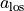
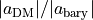
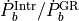
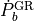
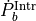
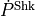

peebee.convenience Module¶
Text here for Sphinx (I think)
Functions¶
|
Compute , the line-of-sight acceleration of a pulsar given its observed properties. |
|
Compute , the ratio of the (magnitudes of the) relative contributions of the dark matter and baryonic components of the Galaxy to the acceleration at a given point. |
|
test autodoc |
|
Compute , the ratio of the observed orbital decay of the binary to the theoretical orbtial decay due to the emission of gravitational waves. |
|
Compute , the change in orbital period due to emission of gravitational waves. |
|
Compute , the binary orbital period derivative of the pulsar not due to the Shklovskii Effect. |
|
Compute , the change in observed period due to the Shklovskii Effect (See Shklovskii, 1970). |
|
text autodoc3 |